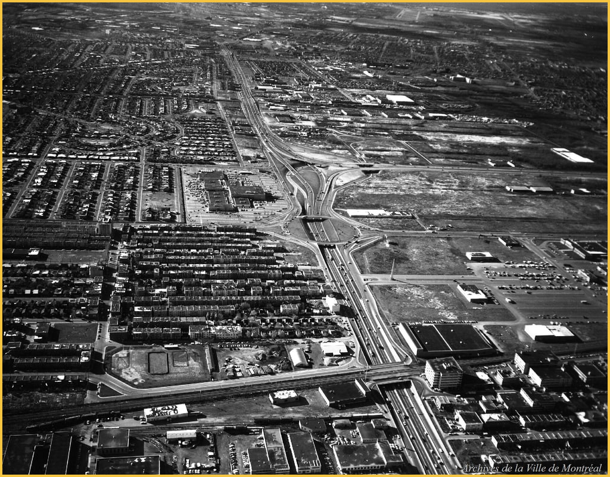

Dossier candidate 11836
Independent dossier review required. Not fully verified.

Visual evidence
- The reviewed pixels are classified as image mode aerial_oblique.
Archive metadata report
Rights and attribution
cc-by-4.0; Archives de la Ville de Montréal
Uncertainty
Candidate claims are limited to accepted/adjudicated visual classifications and reported metadata labels.